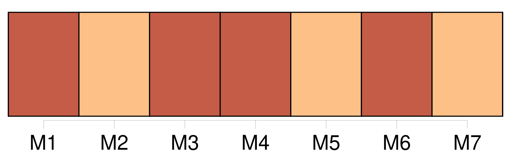

Longueur nb maillons : 11 mentions |
  |
Dès ma plus tendre enfance, je m’ étais senti de la vocation pour l’ état de prêtre ; aussi toutes mes études furent -elles dirigées dans ce sens -là, et [ma vie] , jusqu’ à vingt-quatre ans, ne fut [-elle] qu’ un long noviciat. [170 phrases]
Pour avoir levé une seule fois le regard sur une femme, pour une faute en apparence si légère, j’ ai éprouvé pendant plusieurs années les plus misérables agitations : [ma vie] a été troublée à tout jamais. [64 phrases] j’ aurais voulu pouvoir ramasser [ma vie] en un monceau pour [la] lui donner et souffler sur sa dépouille glacée la flamme qui me dévorait. [15 phrases] Ces trois jours ne comptent pas dans [ma vie] , et je ne sais où mon esprit était allé pendant tout ce temps ; je n’ en ai gardé aucun souvenir. [126 phrases] Deux spirales enchevêtrées l’ une dans l’ autre et confondues sans se toucher jamais représentent très bien cette vie bicéphale qui fut [la mienne] [40 phrases] Ma vie est dans [la tienne] , et tout ce qui est moi vient de toi. [13 phrases] Dors, mon seul bien ; dors, mon dieu, mon enfant ; je ne te ferai pas de mal ; je ne prendrai de [ta vie] [que] ce qu’ il faudra pour ne pas laisser éteindre la mienne. [11 phrases] D’ ailleurs, je n’ avais pas grand’peur ; la femme me répondait du vampire, et ce que j’ avais entendu et vu me rassurait complétement ; j’ avais alors des veines plantureuses qui ne se seraient pas de sitôt épuisées, et je ne marchandais pas [ma vie] goutte à goutte. |

|
La ressource peut être téléchargée sur la page Ortolang
Si vous avez des questions ou vous voyez des erreurs, merci d'envoyer un mail à silvia.federzoni89@gmail.com
Site développé par S. Federzoni (contact)